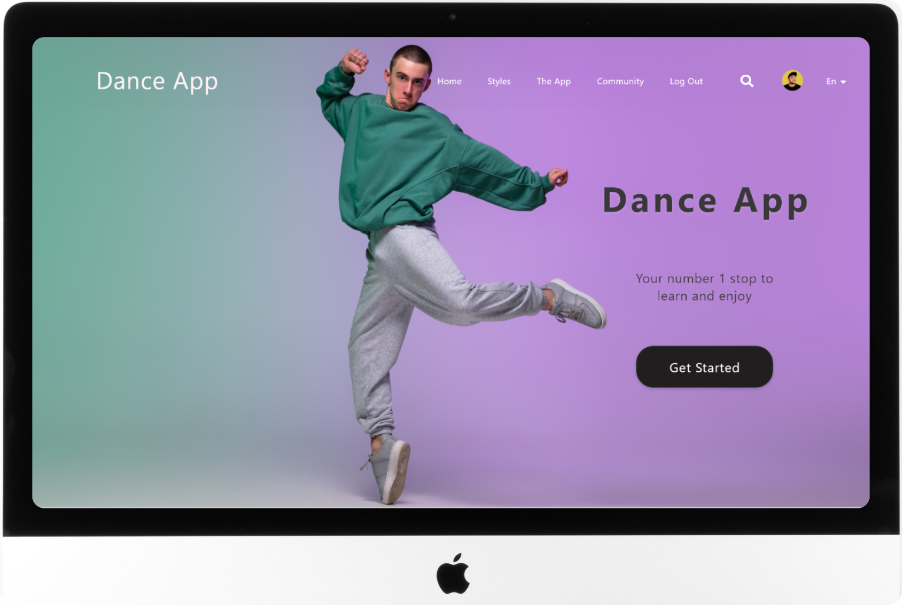
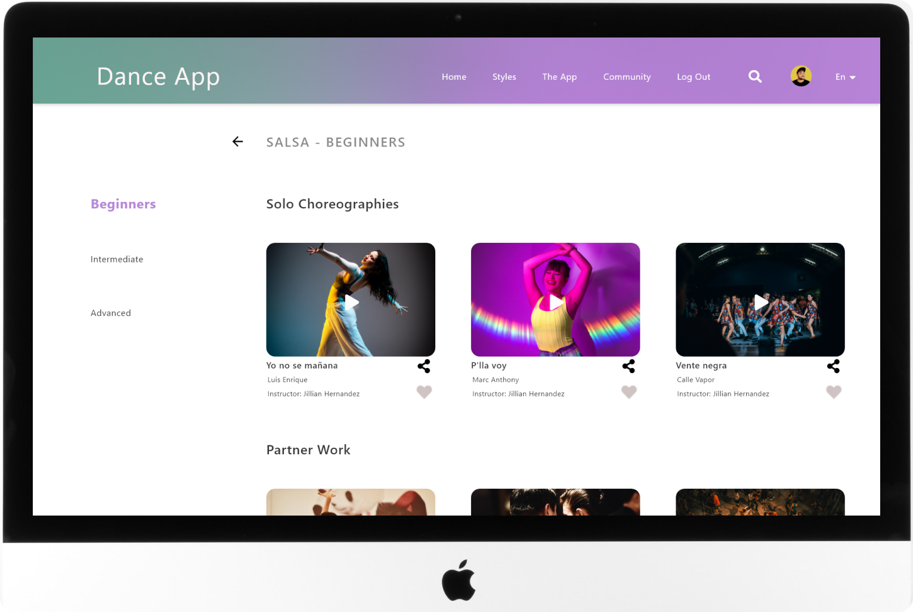
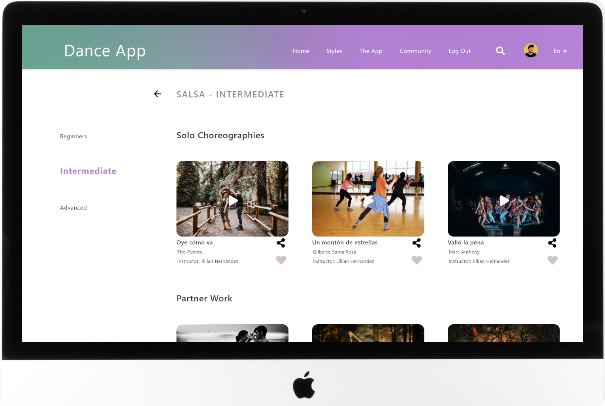
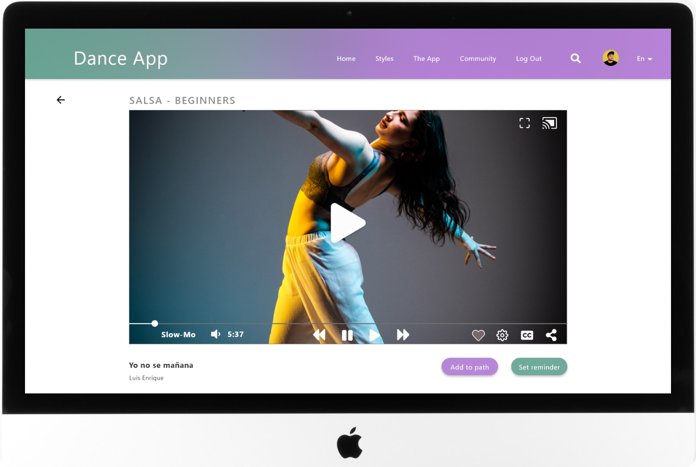
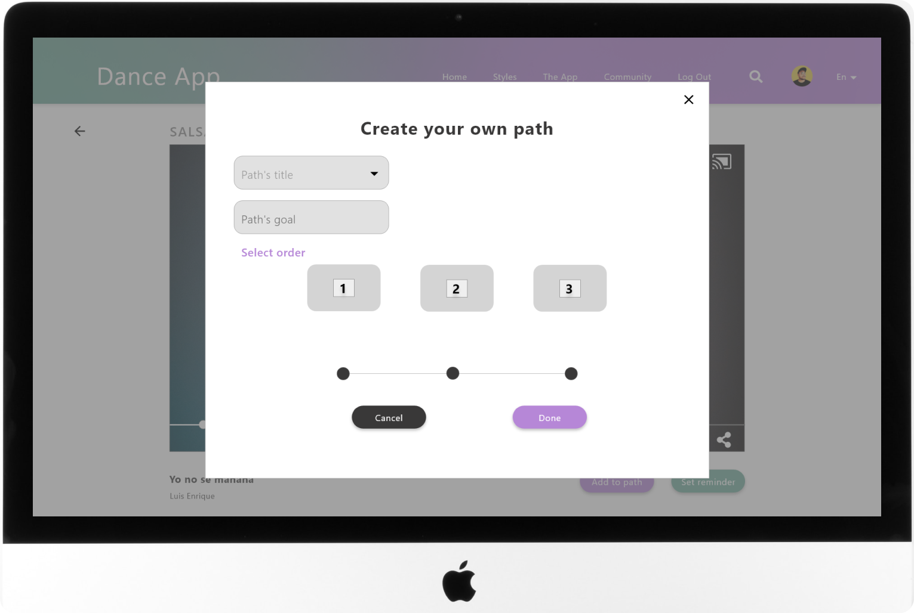
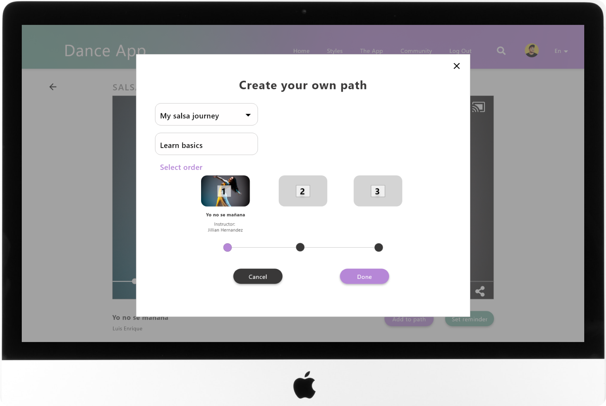
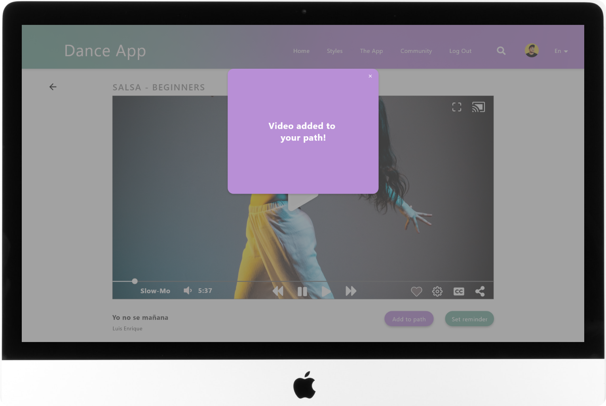
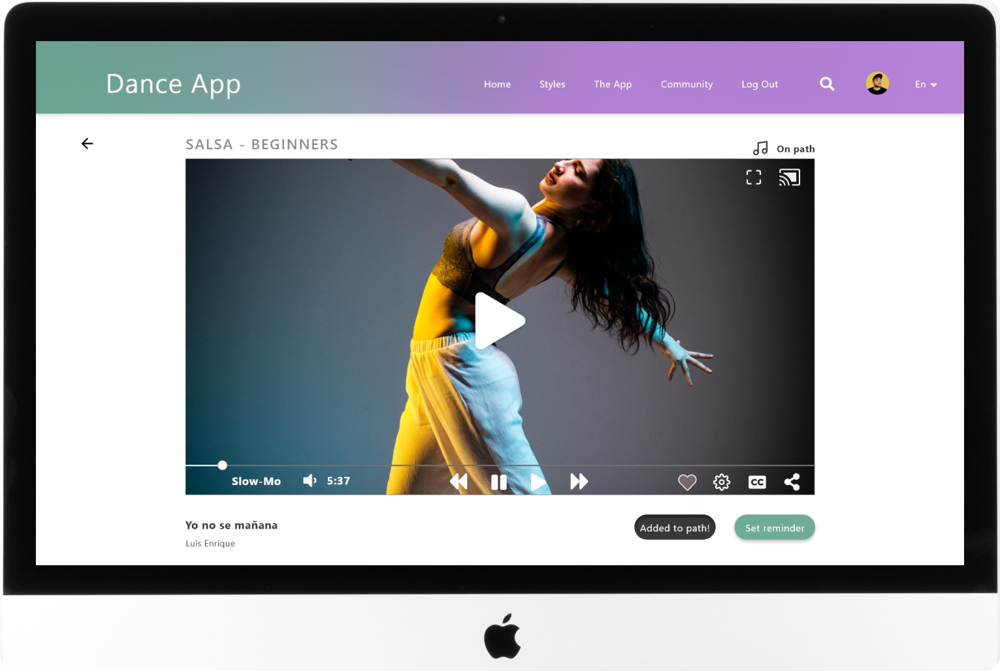
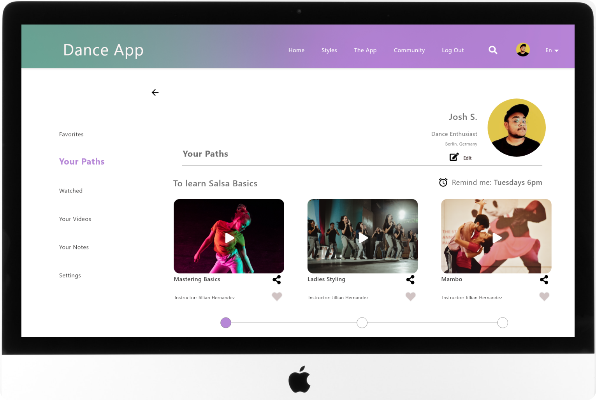

The Problem
According to the research, the platforms most users use to watch dance tutorials are either Youtube, Instagram, or Facebook where they lack the possibility to
filter videos or set learning paths. Besides, videos are of all kinds of definitions and the content can also be of poor quality, making the whole experience
quite frustrating.
The Goal
To provide a platform that offers a single stop for dance learners to not only watch high quality dance tutorials but also to be able to look them up according to level, style,
partner work, or solo choreographies as well as the possibility to follow or create learning paths.
Users also need to be able to set reminders, upload their own videos, and share and connect with the dance community.
Usability Study
I tested the low-fidelity prototype created out of the first wireframes with a usability study.
Refining the design
-

-

-

-

-

-

-

-

-

-

Responsive Design
Mobile use case
After finishing the desktop experience, I follow the graceful degradation approach to come up with a cohesive mobile experience to complement the desktop with features
like casting and downloading videos.
Takeaways
Impact
‘I loved the colors and the interface, it’s really concise, no more info than needed, and super intuitive. Great Job!’
Belen, Marketing and UX student.
What I've learned
This project helped me to get more familiarized with the planning stage since I had to consider many
variations for the same app and thus be aware of the different considerations for each resolution. Spending time planning
ahead before committing to designing saves time and makes the whole process faster..